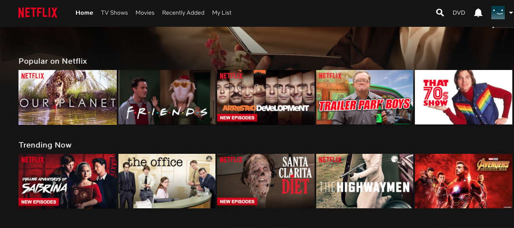

| TEAM CUNYVERSE | ||
|---|---|---|
| Javern Wilson | rpubs | GitHub |
| Mia Siracusa | rpubs | GitHub |
| Kleber Perez | rpubs | GitHub |
| Yohannes Deboch | rpubs | GitHub |
Report created using R Markdown file, and discussion thread with link to the GitHub repo.
We would like to start by defing what Recommender System means. A recommender system or a recommendation system
(sometimes replacing "system" with a synonym such as platform or engine) is a subclass of information filtering
system that seeks to predict the "rating" or "preference" a user would give to an item. Recommender systems are
utilized in a variety of areas including movies, music, news, books, research articles, search queries, social
tags, and products in general.
In this section we will be analyzing the recommender sytem provided by Netflix. The Netflix business is a subscription
service model that offers personalized recommendations, to help subscribers find shows and movies of interest.
For this purpose they have created a proprietary, complex recommendations system. In most cases, these recommendations
receives the highest hit which are then personalized to fit your preferences. They are driven by learning algorithms
which is why each user's recommendations are different. Having a better set of recommendations makes subscribers to
easly browse through the kind of content they like to watch.
Whenever a subscriber accesses the Netflix service, their recommendations system strives to help find a show or
movie to enjoy with minimal effort. The system estimates the likelihood that the subscriber will watch a particular
title in their catalog based on a number of factors including: the subscribers interactions with theor service
(such as viewing history and how the customer rated other titles), other members with similar tastes and preferences
on ther service, and information about the titles, such as their genre, categories, actors, release year, etc.
In addition to knowing what you the subscriber have watched on Netflix, to best personalize the recommendations they
also look at things like: the time of day the subscriber watches, the devices the subscriber is watching Netflix on
and the duration as well.

1. Who are your target customers?
Netflix is an internet streaming software which allows you to watch content through any internet connected device
which include smart TVs, smartphones, tablets, game consoles etc. Netflix has 139 million subscribers globally.
Target
customers would be:
- Anyone who is up to date with technology
- People who do not have time to watch live tv
- People who like to binge watch tv shows and movies
- Households with kids
2. What are their key goals?
To get as much subscribers by improving the customer experience of their entertainment services.
They try to get as much people to watch their content with unlimited hours.
3. How can you help them accomplish those goals?
As this assignment is based on Recommender systems, providing insights on how to improve their recommendations
as this is the best way to better understand their customers indirectly.
How Netflix Recommender system works
Netflix recommender system is based on collaborative filtering therefore they need a certain amount of data to
understand it before making recommendations. When users sign up, the software usaually require the individual to
choose a few shows to jump start their recommendations. They
learn
about the customer's preference based on:
- How customers interact with the servie
- Group customers in clusters of people with similar tastes and preferences
- Information based on genre, actors, titles and the like
Also, with their ratings system, every time subscriber leaves a rating, they are learning what the subscriber enjoys.
- Netflix recommendations are heavily skewed towards what you are currently watching hence you get
stuck in a recommendation rut or lack variety of choices. However, the more you watch, the more your
suggested content becomes relevant
- Recommendations get diluted when multiple people are using the same profiles
- To show your approval, it is either a "thumbs up" or "thumbs down"
Overall, we are satisfied with Netflix's recommendation system .Could there be another way to increase engagement,
besides design tricks, algorithms, and inter-episode ads? We believe Netflix should put its users back behind the wheel.
Here are a few ideas:
- Due to the current trend on the anyone re-watching every movie or show that they previously watched is very
slim will affect the efficiency of the sytem as it will lead the user's browsing experience less optimal,
and as solution for this we recommend removing it or moving the list to the bottom would be good
- Make it easy for people to share titles right in the platform or on social media. Offer a smarter way to
dive in and explore content on your own
- A good search engine with listed results would be ideal,with filters like "Added date," "Minimum user rating,"
"Director," or "Actor/Actress."